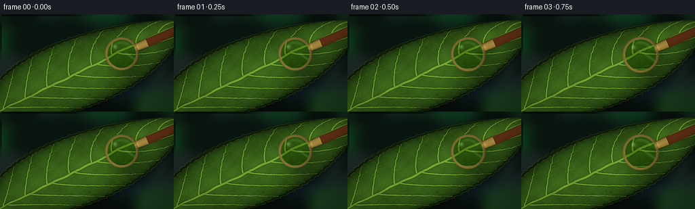
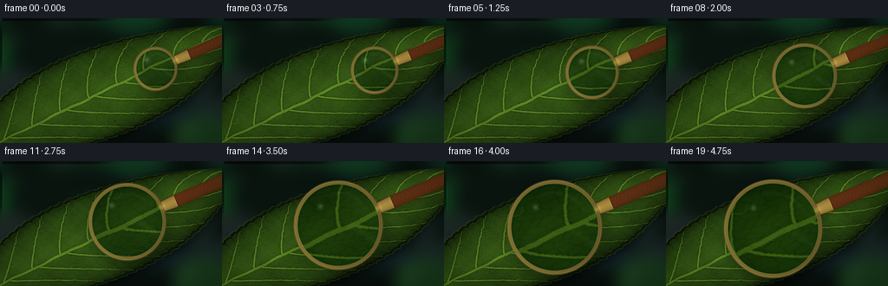
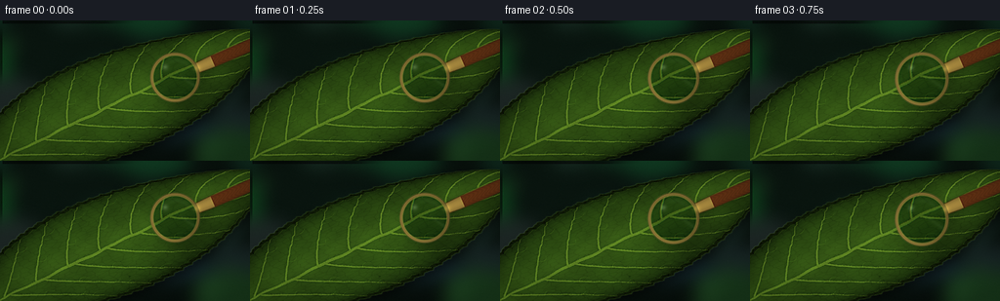
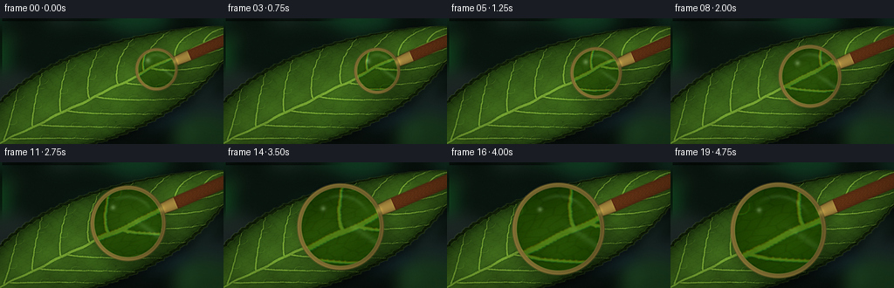
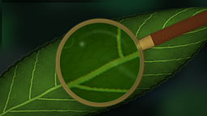
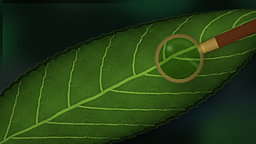
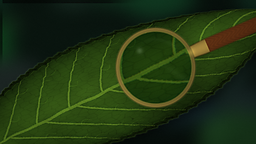

CODING AGENTS AS PIXEL WORLD MODELS
traex/DeepSeek-V4.1-Flash · phygen_068
点击播放 · 原生 RGB 像素
逐轮保存的候选
回放视频、检查图与代码变化。
每份候选均可单独播放。实际图片检查记录在下方工具轨迹中。
候选 01播放与检查图
点击播放 · 原生 RGB 像素


展开代码变化
--- 上一保存版本
+++ 本次保存版本
@@ -0,0 +1,506 @@
+from pathlib import Path
+
+import numpy as np
+from PIL import Image, ImageChops, ImageDraw, ImageFilter
+
+import artifact_io
+
+
+CASE_DIR = Path(__file__).resolve().parent
+WIDTH = 256
+HEIGHT = 144
+FRAMES = 20
+SUPERSAMPLE = 4
+W = WIDTH * SUPERSAMPLE
+H = HEIGHT * SUPERSAMPLE
+
+
+def smoothstep(edge0, edge1, value):
+ value = np.clip((value - edge0) / (edge1 - edge0), 0.0, 1.0)
+ return value * value * (3.0 - 2.0 * value)
+
+
+def pil_blur(array, radius):
+ image = Image.fromarray(np.clip(array * 255.0, 0, 255).astype(np.uint8))
+ image = image.filter(ImageFilter.GaussianBlur(radius))
+ return np.asarray(image, dtype=np.float32) / 255.0
+
+
+def bilinear_sample(image, x, y):
+ x = np.clip(x, 0, W - 1.001)
+ y = np.clip(y, 0, H - 1.001)
+ x0 = np.floor(x).astype(np.int32)
+ y0 = np.floor(y).astype(np.int32)
+ x1 = x0 + 1
+ y1 = y0 + 1
+ wx = x - x0
+ wy = y - y0
+ wx = wx[..., None]
+ wy = wy[..., None]
+ top = image[y0, x0] * (1.0 - wx) + image[y0, x1] * wx
+ bottom = image[y1, x0] * (1.0 - wx) + image[y1, x1] * wx
+ return top * (1.0 - wy) + bottom * wy
+
+
+def hash2(a, b):
+ return np.mod(np.sin(a * 127.1 + b * 311.7) * 43758.5453123, 1.0)
+
+
+YY, XX = np.mgrid[0:H, 0:W].astype(np.float32)
+X = (XX + 0.5) / W
+Y = (YY + 0.5) / H
+
+# The leaf runs diagonally through the frame. Its local coordinates make the
+# vein network and cellular surface easy to model consistently.
+P0 = np.array([-0.10, 1.08], dtype=np.float32)
+AXIS = np.array([0.754, -0.657], dtype=np.float32)
+NORMAL = np.array([0.657, 0.754], dtype=np.float32)
+LEAF_LENGTH = 1.52
+U = (X - P0[0]) * AXIS[0] + (Y - P0[1]) * AXIS[1]
+V = (X - P0[0]) * NORMAL[0] + (Y - P0[1]) * NORMAL[1]
+S = U / LEAF_LENGTH
+
+
+def leaf_halfwidth(s):
+ core = 0.342 * np.power(np.clip(np.sin(np.pi * s), 0.0, 1.0), 0.66)
+ core *= 1.0 - 0.16 * np.clip(s, 0.0, 1.0)
+ serration = 1.0 + 0.012 * np.sin(2.0 * np.pi * 28.0 * s + 0.7)
+ serration += 0.006 * np.sin(2.0 * np.pi * 57.0 * s + 1.9)
+ return core * serration + 0.004
+
+
+HALF = leaf_halfwidth(S)
+REL_V = V / np.maximum(HALF, 1e-5)
+LEAF_EDGE = np.minimum(HALF - np.abs(V), np.minimum(S, 1.0 - S) * 0.16)
+LEAF_MASK = smoothstep(-0.0015, 0.0015, LEAF_EDGE)
+LEAF_MASK *= smoothstep(-0.006, 0.012, S) * (1.0 - smoothstep(0.988, 1.006, S))
+
+
+def uv_to_pixels(s, v):
+ u = np.asarray(s, dtype=np.float32) * LEAF_LENGTH
+ v = np.asarray(v, dtype=np.float32)
+ px = P0[0] + AXIS[0] * u + NORMAL[0] * v
+ py = P0[1] + AXIS[1] * u + NORMAL[1] * v
+ return [(float(x * W), float(y * H)) for x, y in zip(px, py)]
+
+
+def draw_tapered_path(draw, points, widths, fill=255):
+ for index in range(len(points) - 1):
+ width = max(1, int(round(0.5 * (widths[index] + widths[index + 1]))))
+ draw.line([points[index], points[index + 1]], fill=fill, width=width)
+ radius = width * 0.5
+ x, y = points[index]
+ draw.ellipse((x - radius, y - radius, x + radius, y + radius), fill=fill)
+ x, y = points[-1]
+ radius = max(1.0, widths[-1] * 0.5)
+ draw.ellipse((x - radius, y - radius, x + radius, y + radius), fill=fill)
+
+
+def make_background():
+ horizon = np.clip(0.70 - 0.38 * X - 0.30 * Y, 0.0, 1.0)
+ background = np.zeros((H, W, 3), dtype=np.float32)
+ background[..., 0] = 0.018 + 0.025 * horizon
+ background[..., 1] = 0.038 + 0.065 * horizon
+ background[..., 2] = 0.031 + 0.043 * horizon
+
+ rng = np.random.default_rng(1908)
+ layer = Image.new("RGB", (W, H), (0, 0, 0))
+ draw = ImageDraw.Draw(layer)
+ for _ in range(22):
+ x = float(rng.uniform(-0.15, 1.15) * W)
+ y = float(rng.uniform(-0.15, 1.15) * H)
+ rx = float(rng.uniform(0.035, 0.18) * W)
+ ry = float(rng.uniform(0.05, 0.25) * H)
+ color = (
+ int(rng.uniform(10, 34)),
+ int(rng.uniform(30, 78)),
+ int(rng.uniform(20, 47)),
+ )
+ draw.ellipse((x - rx, y - ry, x + rx, y + ry), fill=color)
+ layer = layer.filter(ImageFilter.GaussianBlur(34))
+ background += np.asarray(layer, dtype=np.float32) / 255.0 * 0.62
+
+ # A few soft highlights suggest out-of-focus foliage beyond the specimen.
+ bokeh = Image.new("L", (W, H), 0)
+ bdraw = ImageDraw.Draw(bokeh)
+ for x, y, r, value in [
+ (0.05, 0.16, 0.045, 95),
+ (0.93, 0.27, 0.055, 70),
+ (0.10, 0.83, 0.035, 60),
+ (0.84, 0.91, 0.050, 50),
+ ]:
+ px, py, pr = x * W, y * H, r * W
+ bdraw.ellipse((px - pr, py - pr, px + pr, py + pr), fill=value)
+ bokeh = np.asarray(bokeh.filter(ImageFilter.GaussianBlur(24)), dtype=np.float32) / 255.0
+ background += bokeh[..., None] * np.array([0.05, 0.10, 0.045], dtype=np.float32)
+
+ return np.clip(background, 0.0, 1.0)
+
+
+def make_leaf_masks():
+ major = Image.new("L", (W, H), 0)
+ fine = Image.new("L", (W, H), 0)
+ major_draw = ImageDraw.Draw(major)
+ fine_draw = ImageDraw.Draw(fine)
+
+ # Midrib: broad near the base, narrowing into the tip.
+ ms = np.linspace(0.018, 0.985, 150, dtype=np.float32)
+ mv = 0.0030 * np.sin(2.0 * np.pi * 5.4 * ms) + 0.0015 * np.sin(2.0 * np.pi * 12.7 * ms)
+ midrib_points = uv_to_pixels(ms, mv)
+ midrib_widths = 2.3 + 10.8 * np.power(np.sin(np.pi * ms), 0.58)
+ midrib_widths *= 1.0 - 0.35 * ms
+ draw_tapered_path(major_draw, midrib_points, midrib_widths)
+
+ # Secondary veins curve forward from the midrib toward the margin.
+ branch_starts = np.linspace(0.105, 0.885, 8, dtype=np.float32)
+ for side in (-1.0, 1.0):
+ for branch_index, start in enumerate(branch_starts):
+ stagger = 0.021 if side > 0 else 0.0
+ ub = float(np.clip(start + stagger, 0.06, 0.93))
+ t = np.linspace(0.0, 1.0, 38, dtype=np.float32)
+ reach = 0.175 + 0.035 * (1.0 - ub)
+ branch_s = ub + reach * t
+ branch_hw = leaf_halfwidth(branch_s)
+ curve = 0.004 * np.sin(np.pi * t * (2.0 + branch_index * 0.12) + side * 0.8)
+ branch_v = side * (0.004 + 0.925 * branch_hw * np.power(t, 0.82) + curve * t)
+ points = uv_to_pixels(branch_s, branch_v)
+ widths = 5.6 * np.power(1.0 - 0.82 * t, 1.25) + 1.25
+ draw_tapered_path(major_draw, points, widths)
+
+ # Fine side veins branch from the larger channels.
+ for fraction, direction in ((0.34, -0.020), (0.60, 0.018), (0.81, -0.012)):
+ index = int(fraction * (len(t) - 1))
+ fs = float(branch_s[index])
+ fv = float(branch_v[index])
+ ft = np.linspace(0.0, 1.0, 12, dtype=np.float32)
+ fine_s = fs + (0.024 + 0.018 * fraction) * ft
+ fine_v = fv + side * direction * np.sin(np.pi * ft * 0.9) + 0.010 * side * ft
+ fine_points = uv_to_pixels(fine_s, fine_v)
+ fine_widths = np.linspace(2.1, 0.9, len(fine_points))
+ draw_tapered_path(fine_draw, fine_points, fine_widths)
+
+ # Marginal vein following both leaf edges.
+ edge_s = np.linspace(0.04, 0.96, 150, dtype=np.float32)
+ edge_hw = leaf_halfwidth(edge_s)
+ for side in (-1.0, 1.0):
+ edge_points = uv_to_pixels(edge_s, side * 0.925 * edge_hw)
+ draw_tapered_path(fine_draw, edge_points, np.full(len(edge_points), 2.2))
+
+ major = pil_blur(np.asarray(major, dtype=np.float32) / 255.0, 1.2)
+ fine = pil_blur(np.asarray(fine, dtype=np.float32) / 255.0, 0.85)
+ return major, fine
+
+
+def cellular_texture():
+ gu = S * 34.0
+ gv = V * 47.0
+ iu = np.floor(gu)
+ iv = np.floor(gv)
+ f1 = np.full((H, W), 10.0, dtype=np.float32)
+ f2 = np.full((H, W), 10.0, dtype=np.float32)
+ for oy in (-1, 0, 1):
+ for ox in (-1, 0, 1):
+ a = iu + ox
+ b = iv + oy
+ hx = hash2(a, b)
+ hy = hash2(a + 17.0, b - 9.0)
+ cx = a + 0.12 + 0.76 * hx
+ cy = b + 0.12 + 0.76 * hy
+ distance = np.sqrt((gu - cx) ** 2 + (gv - cy) ** 2)
+ closer = distance < f1
+ f2 = np.where(closer, f1, np.minimum(f2, distance))
+ f1 = np.where(closer, distance, f1)
+ boundary = np.exp(-np.square((f2 - f1) / 0.055))
+ interior = smoothstep(0.025, 0.20, f2 - f1)
+ return boundary, interior
+
+
+def make_leaf_texture(background):
+ # Soft shadow grounds the leaf against the dark, out-of-focus background.
+ leaf_image = Image.fromarray((LEAF_MASK * 255).astype(np.uint8))
+ shadow = leaf_image.filter(ImageFilter.GaussianBlur(18))
+ shadow = ImageChops.offset(shadow, 10, 13)
+ shadow = np.asarray(shadow, dtype=np.float32) / 255.0
+ scene = background * (1.0 - 0.52 * shadow[..., None])
+
+ dome = np.sqrt(np.clip(1.0 - REL_V * REL_V, 0.0, 1.0))
+ pos = np.clip(np.abs(REL_V), 0.0, 1.0)
+ edge_ao = 1.0 - 0.54 * np.exp(-np.square((1.0 - pos) / 0.075))
+
+ broad_noise = (
+ 0.50 * np.sin(2.0 * np.pi * (2.4 * X + 1.3 * Y) + 0.2)
+ + 0.28 * np.sin(2.0 * np.pi * (5.8 * X - 3.1 * Y) + 1.7)
+ + 0.16 * np.sin(2.0 * np.pi * (12.7 * X + 7.4 * Y) + 2.1)
+ )
+ broad_noise = 0.5 + 0.5 * broad_noise
+
+ cell_boundary, cell_interior = cellular_texture()
+ rng = np.random.default_rng(681)
+ grain = rng.normal(0.0, 1.0, (H, W)).astype(np.float32)
+
+ edge_color = np.array([0.035, 0.095, 0.022], dtype=np.float32)
+ center_color = np.array([0.225, 0.390, 0.095], dtype=np.float32)
+ leaf = edge_color + dome[..., None] * (center_color - edge_color)
+ leaf *= (0.82 + 0.22 * broad_noise[..., None])
+ leaf *= edge_ao[..., None]
+ leaf += (cell_interior[..., None] - 0.5) * np.array([0.010, 0.018, 0.004], dtype=np.float32)
+ leaf -= cell_boundary[..., None] * np.array([0.013, 0.016, 0.008], dtype=np.float32)
+ leaf += grain[..., None] * 0.0045
+
+ major, fine = make_leaf_masks()
+ major_shadow = pil_blur(major, 4.5)
+ fine_shadow = pil_blur(fine, 2.2)
+ leaf -= major_shadow[..., None] * np.array([0.060, 0.064, 0.030], dtype=np.float32)
+ leaf += major[..., None] * np.array([0.245, 0.270, 0.105], dtype=np.float32)
+ leaf += fine[..., None] * np.array([0.090, 0.115, 0.045], dtype=np.float32)
+ leaf -= fine_shadow[..., None] * np.array([0.020, 0.022, 0.012], dtype=np.float32)
+
+ # A soft longitudinal sheen makes the leaf feel waxy rather than flat.
+ sheen = np.exp(-np.square((REL_V + 0.10) / 0.22)) * (0.45 + 0.55 * dome)
+ sheen *= smoothstep(0.08, 0.35, S) * (1.0 - smoothstep(0.82, 0.99, S))
+ leaf += sheen[..., None] * np.array([0.030, 0.040, 0.012], dtype=np.float32)
+
+ # Sparse leaf spots and tiny blemishes add scale and material variation.
+ spot_layer = Image.new("L", (W, H), 0)
+ spot_draw = ImageDraw.Draw(spot_layer)
+ spot_rng = np.random.default_rng(994)
+ for _ in range(54):
+ ss = float(spot_rng.uniform(0.07, 0.94))
+ hw = float(leaf_halfwidth(np.array(ss)))
+ vv = float(spot_rng.uniform(-0.82, 0.82) * hw)
+ point = uv_to_pixels([ss], [vv])[0]
+ radius = float(spot_rng.uniform(1.2, 5.5))
+ stretch = float(spot_rng.uniform(0.65, 1.55))
+ spot_draw.ellipse(
+ (
+ point[0] - radius * stretch,
+ point[1] - radius,
+ point[0] + radius * stretch,
+ point[1] + radius,
+ ),
+ fill=int(spot_rng.uniform(70, 180)),
+ )
+ spots = np.asarray(spot_layer.filter(ImageFilter.GaussianBlur(1.1)), dtype=np.float32) / 255.0
+ spots *= LEAF_MASK * smoothstep(0.15, 0.65, np.abs(REL_V))
+ leaf -= spots[..., None] * np.array([0.045, 0.055, 0.028], dtype=np.float32)
+
+ # Fine hairs catch light at the leaf margin.
+ hair_layer = Image.new("L", (W, H), 0)
+ hair_draw = ImageDraw.Draw(hair_layer)
+ hair_rng = np.random.default_rng(450)
+ for _ in range(72):
+ ss = float(hair_rng.uniform(0.05, 0.94))
+ side = -1.0 if hair_rng.random() < 0.5 else 1.0
+ hw = float(leaf_halfwidth(np.array(ss)))
+ start = uv_to_pixels([ss], [side * hw * 0.975])[0]
+ end_s = ss + float(hair_rng.uniform(-0.004, 0.010))
+ end_v = side * (hw + float(hair_rng.uniform(0.008, 0.025)))
+ end = uv_to_pixels([end_s], [end_v])[0]
+ hair_draw.line((start, end), fill=int(hair_rng.uniform(90, 190)), width=1)
+ hairs = np.asarray(hair_layer, dtype=np.float32) / 255.0
+ leaf += hairs[..., None] * np.array([0.12, 0.15, 0.07], dtype=np.float32)
+
+ leaf = np.clip(leaf, 0.0, 1.0)
+ alpha = LEAF_MASK[..., None]
+ scene = scene * (1.0 - alpha) + leaf * alpha
+
+ # A narrow, lit rim separates the specimen from the dark background.
+ rim_distance = np.abs(np.abs(V) - HALF)
+ rim = np.exp(-np.square(rim_distance / 0.0045)) * (0.55 + 0.45 * dome)
+ scene += rim[..., None] * np.array([0.11, 0.15, 0.055], dtype=np.float32)
+ return np.clip(scene, 0.0, 1.0)
+
+
+def lens_geometry(frame_index):
+ t = frame_index / (FRAMES - 1)
+ eased = t * t * (3.0 - 2.0 * t)
+ cx = (0.700 - 0.218 * eased + 0.008 * np.sin(np.pi * eased)) * W
+ cy = (0.405 + 0.135 * eased + 0.006 * np.sin(2.0 * np.pi * eased)) * H
+ radius = (24.5 + 30.5 * eased) * SUPERSAMPLE
+ zoom = 1.28 + 1.18 * eased
+ rim_width = (3.3 + 1.8 * eased) * SUPERSAMPLE
+ return float(cx), float(cy), float(radius), float(zoom), float(rim_width), t
+
+
+def render_lens(scene, frame_index):
+ cx, cy, radius, zoom, rim_width, t = lens_geometry(frame_index)
+ dx = XX - cx
+ dy = YY - cy
+ distance = np.sqrt(dx * dx + dy * dy)
+ rnorm = distance / radius
+ angle = np.arctan2(dy, dx)
+ inner_radius = radius - rim_width
+ aa = 1.35 * SUPERSAMPLE
+
+ # Cast shadow from the metal ring and handle, offset down and to the right.
+ sx = XX - cx - 5.0 * SUPERSAMPLE
+ sy = YY - cy - 6.0 * SUPERSAMPLE
+ shadow_circle = smoothstep(radius + 7.0 * SUPERSAMPLE, radius - 1.0 * SUPERSAMPLE, np.sqrt(sx * sx + sy * sy))
+ shadow_circle = pil_blur(shadow_circle, 6.5 * SUPERSAMPLE)
+ scene = scene * (1.0 - 0.28 * shadow_circle[..., None])
+
+ handle_angle = -0.405
+ direction = np.array([np.cos(handle_angle), np.sin(handle_angle)], dtype=np.float32)
+ perpendicular = np.array([-direction[1], direction[0]], dtype=np.float32)
+ handle_start = np.array([cx, cy], dtype=np.float32) + direction * (radius - 0.35 * rim_width)
+ qx = XX - handle_start[0]
+ qy = YY - handle_start[1]
+ along = qx * direction[0] + qy * direction[1]
+ across = qx * perpendicular[0] + qy * perpendicular[1]
+ handle_length = 96.0 * SUPERSAMPLE
+ handle_width = (6.3 + 1.8 * t) * SUPERSAMPLE
+ width_profile = handle_width * (0.88 + 0.12 * smoothstep(0.0, 0.17 * handle_length, along))
+ handle_mask = smoothstep(width_profile + aa, width_profile - aa, np.abs(across))
+ handle_mask *= smoothstep(-aa, aa, along)
+ handle_mask *= 1.0 - smoothstep(handle_length - aa, handle_length + aa, along)
+
+ handle_shadow = smoothstep(width_profile + 3.0 * SUPERSAMPLE, width_profile - 2.0 * SUPERSAMPLE, np.abs(across - 3.0 * SUPERSAMPLE))
+ handle_shadow *= smoothstep(-2.0 * SUPERSAMPLE, 2.0 * SUPERSAMPLE, along)
+ handle_shadow *= 1.0 - smoothstep(handle_length - 2.0 * SUPERSAMPLE, handle_length + 2.0 * SUPERSAMPLE, along)
+ handle_shadow = pil_blur(handle_shadow, 4.0 * SUPERSAMPLE)
+ scene = scene * (1.0 - 0.22 * handle_shadow[..., None])
+
+ # Walnut handle with a turned-metal ferrule next to the frame.
+ across_norm = np.clip(across / np.maximum(width_profile, 1.0), -1.0, 1.0)
+ handle_bevel = np.sqrt(np.clip(1.0 - across_norm * across_norm, 0.0, 1.0))
+ handle_light = 0.33 + 0.55 * handle_bevel + 0.16 * np.clip(-across_norm, 0.0, 1.0)
+ handle_grain = 0.5 + 0.5 * np.sin(along / (0.75 * SUPERSAMPLE) + 5.5 * np.sin(across / (1.8 * SUPERSAMPLE)))
+ handle_color = np.stack(
+ [
+ 0.165 + 0.20 * handle_light + 0.035 * handle_grain,
+ 0.073 + 0.105 * handle_light + 0.018 * handle_grain,
+ 0.025 + 0.045 * handle_light + 0.008 * handle_grain,
+ ],
+ axis=-1,
+ )
+ ferrule = smoothstep(-0.5 * SUPERSAMPLE, 0.5 * SUPERSAMPLE, along)
+ ferrule *= 1.0 - smoothstep(17.0 * SUPERSAMPLE, 18.0 * SUPERSAMPLE, along)
+ ferrule *= handle_mask
+ ferrule_color = np.stack(
+ [
+ 0.31 + 0.34 * handle_bevel,
+ 0.255 + 0.27 * handle_bevel,
+ 0.105 + 0.13 * handle_bevel,
+ ],
+ axis=-1,
+ )
+ handle_color = handle_color * (1.0 - ferrule[..., None]) + ferrule_color * ferrule[..., None]
+ scene = scene * (1.0 - handle_mask[..., None]) + handle_color * handle_mask[..., None]
+
+ # Magnified glass view. Slight radial distortion and chromatic offset sell
+ # the curvature without making the leaf texture look synthetic.
+ radial = 1.0 + 0.075 * np.square(np.clip(rnorm, 0.0, 1.0))
+ scale = radial / zoom
+ lens_x = cx + dx * scale
+ lens_y = cy + dy * scale
+ chroma = 0.0032 * (0.3 + 0.7 * np.clip(rnorm, 0.0, 1.0))
+ lens_r = bilinear_sample(scene, lens_x * (1.0 + chroma), lens_y * (1.0 + chroma))[..., 0]
+ lens_g = bilinear_sample(scene, lens_x, lens_y)[..., 1]
+ lens_b = bilinear_sample(scene, lens_x * (1.0 - chroma), lens_y * (1.0 - chroma))[..., 2]
+ lens = np.stack([lens_r, lens_g, lens_b], axis=-1)
+
+ lens = (lens - 0.5) * (1.08 + 0.08 * t) + 0.50
+ lens *= np.array([0.985, 1.025, 0.965], dtype=np.float32)
+ lens += (1.0 - np.clip(rnorm, 0.0, 1.0))[..., None] * np.array([0.016, 0.022, 0.008], dtype=np.float32)
+
+ # Mild local sharpening reveals cell walls and vein margins.
+ lens_u8 = np.clip(lens * 255.0, 0, 255).astype(np.uint8)
+ soft = np.asarray(Image.fromarray(lens_u8).filter(ImageFilter.GaussianBlur(1.4)), dtype=np.float32) / 255.0
+ lens = np.clip(lens + 0.20 * (lens - soft), 0.0, 1.0)
+
+ inner_mask = smoothstep(inner_radius + aa, inner_radius - aa, distance)
+ scene = scene * (1.0 - inner_mask[..., None]) + lens * inner_mask[..., None]
+
+ # Broad diagonal reflection, an inner arc, and a tiny pinpoint highlight.
+ ux = dx / radius
+ uy = dy / radius
+ streak_pos = -0.58 * ux + 0.81 * uy
+ streak_length = 0.31 * ux + 0.95 * uy
+ streak = np.exp(-np.square((streak_pos + 0.18) / 0.075))
+ streak *= smoothstep(-0.20, 0.28, streak_length) * (1.0 - smoothstep(0.72, 1.02, streak_length))
+ streak *= inner_mask * (0.20 - 0.07 * t)
+ scene += streak[..., None] * np.array([0.42, 0.50, 0.42], dtype=np.float32)
+
+ arc_radius = inner_radius * 0.78
+ arc = np.exp(-np.square((distance - arc_radius) / (2.3 * SUPERSAMPLE)))
+ arc *= smoothstep(-2.45, -1.55, angle) * (1.0 - smoothstep(-1.05, -0.25, angle))
+ arc *= 0.18
+ scene += arc[..., None] * np.array([0.35, 0.43, 0.36], dtype=np.float32)
+
+ glint_x = cx - radius * 0.40
+ glint_y = cy - radius * 0.42
+ glint = np.exp(-((XX - glint_x) ** 2 + (YY - glint_y) ** 2) / (2.0 * (2.1 * SUPERSAMPLE) ** 2))
+ scene += glint[..., None] * 0.20
+
+ # Antique brass rim with directional highlights and dark seams.
+ ring_mask = smoothstep(radius + aa, radius - aa, distance)
+ ring_mask *= 1.0 - smoothstep(inner_radius + aa, inner_radius - aa, distance)
+ light = 0.50 + 0.32 * np.clip(-np.cos(angle + 0.82), 0.0, 1.0)
+ light += 0.20 * np.clip(-np.sin(angle + 0.25), 0.0, 1.0)
+ rim_color = np.stack(
+ [
+ 0.24 + 0.34 * light,
+ 0.205 + 0.29 * light,
+ 0.085 + 0.14 * light,
+ ],
+ axis=-1,
+ )
+ rim_color *= (0.88 + 0.12 * smoothstep(inner_radius, radius, distance))[..., None]
+ outer_seam = np.exp(-np.square((distance - radius) / (0.55 * SUPERSAMPLE)))
+ inner_seam = np.exp(-np.square((distance - inner_radius) / (0.62 * SUPERSAMPLE)))
+ rim_color -= outer_seam[..., None] * np.array([0.12, 0.10, 0.04], dtype=np.float32)
+ rim_color += inner_seam[..., None] * np.array([0.16, 0.15, 0.065], dtype=np.float32)
+ scene = scene * (1.0 - ring_mask[..., None]) + np.clip(rim_color, 0.0, 1.0) * ring_mask[..., None]
+
+ # A specular bead where the handle meets the frame.
+ collar_x = cx + direction[0] * (radius - 0.45 * rim_width)
+ collar_y = cy + direction[1] * (radius - 0.45 * rim_width)
+ collar = np.exp(-((XX - collar_x) ** 2 + (YY - collar_y) ** 2) / (2.0 * (2.4 * SUPERSAMPLE) ** 2))
+ scene += collar[..., None] * np.array([0.20, 0.18, 0.07], dtype=np.float32)
+
+ return np.clip(scene, 0.0, 1.0)
+
+
+def post_process(scene, frame_index):
+ # Gentle optical bloom on the brightest leaf veins and metal highlights.
+ luminance = scene[..., 0] * 0.2126 + scene[..., 1] * 0.7152 + scene[..., 2] * 0.0722
+ bright = np.clip((luminance - 0.55) / 0.45, 0.0, 1.0)
+ bloom = pil_blur(bright, 7.0)
+ scene += bloom[..., None] * np.array([0.055, 0.070, 0.032], dtype=np.float32)
+
+ # Lens vignette and restrained film grain keep the macro image cohesive.
+ nx = (XX - W * 0.5) / (W * 0.5)
+ ny = (YY - H * 0.5) / (H * 0.5)
+ vignette = 1.0 - 0.22 * np.power(np.clip(nx * nx + ny * ny, 0.0, 1.6) / 1.6, 1.25)
+ scene *= vignette[..., None]
+
+ rng = np.random.default_rng(8000 + frame_index)
+ noise = rng.normal(0.0, 0.0060, (H, W, 1)).astype(np.float32)
+ scene = np.clip(scene + noise, 0.0, 1.0)
+
+ # Slight warm lift in highlights and cool shadow depth.
+ scene = np.clip(scene * 1.015 + np.array([0.002, 0.003, 0.000], dtype=np.float32), 0.0, 1.0)
+ scene = np.power(scene, 0.96)
+ return scene
+
+
+def main():
+ background = make_background()
+ base_scene = make_leaf_texture(background)
+ frames = []
+
+ for index in range(FRAMES):
+ scene = render_lens(base_scene, index)
+ scene = post_process(scene, index)
+ frame = Image.fromarray(np.clip(scene * 255.0, 0, 255).astype(np.uint8), "RGB")
+ frame = frame.resize((WIDTH, HEIGHT), Image.Resampling.LANCZOS)
+ frame = frame.filter(ImageFilter.UnsharpMask(radius=0.7, percent=115, threshold=2))
+ frames.append(np.asarray(frame, dtype=np.uint8))
+
+ frames = np.stack(frames, axis=0)
+ artifact_io.save(frames, CASE_DIR)
+ print(f"saved {len(frames)} frames to {CASE_DIR}")
+
+
+if __name__ == "__main__":
+ main()
候选 02播放与检查图
点击播放 · 原生 RGB 像素


展开代码变化
--- 上一保存版本
+++ 本次保存版本
@@ -238,8 +238,8 @@
rng = np.random.default_rng(681)
grain = rng.normal(0.0, 1.0, (H, W)).astype(np.float32)
- edge_color = np.array([0.035, 0.095, 0.022], dtype=np.float32)
- center_color = np.array([0.225, 0.390, 0.095], dtype=np.float32)
+ edge_color = np.array([0.035, 0.078, 0.020], dtype=np.float32)
+ center_color = np.array([0.185, 0.315, 0.072], dtype=np.float32)
leaf = edge_color + dome[..., None] * (center_color - edge_color)
leaf *= (0.82 + 0.22 * broad_noise[..., None])
leaf *= edge_ao[..., None]
@@ -250,9 +250,9 @@
major, fine = make_leaf_masks()
major_shadow = pil_blur(major, 4.5)
fine_shadow = pil_blur(fine, 2.2)
- leaf -= major_shadow[..., None] * np.array([0.060, 0.064, 0.030], dtype=np.float32)
- leaf += major[..., None] * np.array([0.245, 0.270, 0.105], dtype=np.float32)
- leaf += fine[..., None] * np.array([0.090, 0.115, 0.045], dtype=np.float32)
+ leaf -= major_shadow[..., None] * np.array([0.050, 0.052, 0.024], dtype=np.float32)
+ leaf += major[..., None] * np.array([0.185, 0.205, 0.068], dtype=np.float32)
+ leaf += fine[..., None] * np.array([0.070, 0.087, 0.030], dtype=np.float32)
leaf -= fine_shadow[..., None] * np.array([0.020, 0.022, 0.012], dtype=np.float32)
# A soft longitudinal sheen makes the leaf feel waxy rather than flat.
@@ -316,9 +316,9 @@
eased = t * t * (3.0 - 2.0 * t)
cx = (0.700 - 0.218 * eased + 0.008 * np.sin(np.pi * eased)) * W
cy = (0.405 + 0.135 * eased + 0.006 * np.sin(2.0 * np.pi * eased)) * H
- radius = (24.5 + 30.5 * eased) * SUPERSAMPLE
- zoom = 1.28 + 1.18 * eased
- rim_width = (3.3 + 1.8 * eased) * SUPERSAMPLE
+ radius = (25.5 + 31.5 * eased) * SUPERSAMPLE
+ zoom = 1.18 + 1.05 * eased
+ rim_width = (3.1 + 1.6 * eased) * SUPERSAMPLE
return float(cx), float(cy), float(radius), float(zoom), float(rim_width), t
@@ -393,20 +393,24 @@
scale = radial / zoom
lens_x = cx + dx * scale
lens_y = cy + dy * scale
- chroma = 0.0032 * (0.3 + 0.7 * np.clip(rnorm, 0.0, 1.0))
+ chroma = 0.0016 * (0.25 + 0.75 * np.clip(rnorm, 0.0, 1.0))
lens_r = bilinear_sample(scene, lens_x * (1.0 + chroma), lens_y * (1.0 + chroma))[..., 0]
lens_g = bilinear_sample(scene, lens_x, lens_y)[..., 1]
lens_b = bilinear_sample(scene, lens_x * (1.0 - chroma), lens_y * (1.0 - chroma))[..., 2]
lens = np.stack([lens_r, lens_g, lens_b], axis=-1)
- lens = (lens - 0.5) * (1.08 + 0.08 * t) + 0.50
- lens *= np.array([0.985, 1.025, 0.965], dtype=np.float32)
- lens += (1.0 - np.clip(rnorm, 0.0, 1.0))[..., None] * np.array([0.016, 0.022, 0.008], dtype=np.float32)
+ # Clear optical glass only slightly lifts contrast and saturation. The
+ # center stays transparent, with a faint blue-green edge tint.
+ lens = (lens - 0.5) * (1.06 + 0.05 * t) + 0.50
+ lens = 0.5 + (lens - 0.5) * np.array([1.02, 1.01, 0.96], dtype=np.float32)
+ edge_tint = smoothstep(0.58, 1.0, np.clip(rnorm, 0.0, 1.0))
+ lens = lens * (1.0 - 0.035 * edge_tint[..., None])
+ lens += edge_tint[..., None] * np.array([-0.004, 0.002, 0.006], dtype=np.float32)
# Mild local sharpening reveals cell walls and vein margins.
lens_u8 = np.clip(lens * 255.0, 0, 255).astype(np.uint8)
soft = np.asarray(Image.fromarray(lens_u8).filter(ImageFilter.GaussianBlur(1.4)), dtype=np.float32) / 255.0
- lens = np.clip(lens + 0.20 * (lens - soft), 0.0, 1.0)
+ lens = np.clip(lens + 0.24 * (lens - soft), 0.0, 1.0)
inner_mask = smoothstep(inner_radius + aa, inner_radius - aa, distance)
scene = scene * (1.0 - inner_mask[..., None]) + lens * inner_mask[..., None]
@@ -418,19 +422,19 @@
streak_length = 0.31 * ux + 0.95 * uy
streak = np.exp(-np.square((streak_pos + 0.18) / 0.075))
streak *= smoothstep(-0.20, 0.28, streak_length) * (1.0 - smoothstep(0.72, 1.02, streak_length))
- streak *= inner_mask * (0.20 - 0.07 * t)
- scene += streak[..., None] * np.array([0.42, 0.50, 0.42], dtype=np.float32)
+ streak *= inner_mask * (0.105 - 0.040 * t)
+ scene += streak[..., None] * np.array([0.30, 0.34, 0.27], dtype=np.float32)
arc_radius = inner_radius * 0.78
arc = np.exp(-np.square((distance - arc_radius) / (2.3 * SUPERSAMPLE)))
arc *= smoothstep(-2.45, -1.55, angle) * (1.0 - smoothstep(-1.05, -0.25, angle))
- arc *= 0.18
- scene += arc[..., None] * np.array([0.35, 0.43, 0.36], dtype=np.float32)
+ arc *= 0.09
+ scene += arc[..., None] * np.array([0.24, 0.28, 0.23], dtype=np.float32)
glint_x = cx - radius * 0.40
glint_y = cy - radius * 0.42
glint = np.exp(-((XX - glint_x) ** 2 + (YY - glint_y) ** 2) / (2.0 * (2.1 * SUPERSAMPLE) ** 2))
- scene += glint[..., None] * 0.20
+ scene += glint[..., None] * 0.14
# Antique brass rim with directional highlights and dark seams.
ring_mask = smoothstep(radius + aa, radius - aa, distance)
@@ -492,7 +496,7 @@
for index in range(FRAMES):
scene = render_lens(base_scene, index)
scene = post_process(scene, index)
- frame = Image.fromarray(np.clip(scene * 255.0, 0, 255).astype(np.uint8), "RGB")
+ frame = Image.fromarray(np.clip(scene * 255.0, 0, 255).astype(np.uint8))
frame = frame.resize((WIDTH, HEIGHT), Image.Resampling.LANCZOS)
frame = frame.filter(ImageFilter.UnsharpMask(radius=0.7, percent=115, threshold=2))
frames.append(np.asarray(frame, dtype=np.uint8))
可观测工具轨迹
实际执行的命令与返回图片。
命令 1exit 0
/bin/bash -lc "pwd && rg --files -g '"'!*node_modules*'"' -g '"'!*.git*'"' | sed -n '1,160p'"
命令 2exit 0
/bin/bash -lc "printf '%s\\n' '--- prompt.txt ---'; sed -n '1,240p' prompt.txt; printf '%s\\n' '--- GENERATION_RULES.md ---'; sed -n '1,320p' GENERATION_RULES.md; printf '%s\\n' '--- task_spec.json ---'; sed -n '1,320p' task_spec.json"
命令 3exit 0
/bin/bash -lc "find . -maxdepth 3 -type f -not -path './.git/*' -printf '%p %s bytes\\n' | sort | sed -n '1,220p'; printf '%s\\n' '--- tools ---'; command -v ffmpeg || true; command -v ffprobe || true; command -v python3 || true; command -v blender || true; command -v convert || true; command -v magick || true"
命令 4exit 0
/bin/bash -lc "sed -n '1,260p' artifact_io.py"
命令 5exit 0
/bin/bash -lc "sed -n '1,280p' player_template.html"
命令 6exit 0
/bin/bash -lc "python3 - <<'PY'
try:
import numpy; print('numpy', numpy.__version__)
except Exception as e: print('numpy missing',e)
try:
from PIL import Image; print('PIL ok')
except Exception as e: print('PIL missing',e)
PY"命令 7exit 1
/bin/bash -lc 'python3 generate.py'
命令 8exit 0
/bin/bash -lc 'python3 generate.py'
命令 9exit 0
/bin/bash -lc 'ls -lh frames/00.png frames/10.png frames/19.png inspection.png pixels.npz index.html'
命令 10exit 0
/bin/bash -lc "python3 - <<'PY'
from PIL import Image
import numpy as np
for i in [0,10,19]:
a=np.asarray(Image.open(f'frames/{i:02d}.png'))
print(i, a.shape, 'min/max/mean', a.min(axis=(0,1)), a.max(axis=(0,1)), a.mean(axis=(0,1)))
# lens center approximate
t=i/19; e=t*t*(3-2*t); cx=int((.700-.218*e)*256); cy=int((.405+.135*e)*144)
print('center',cx,cy,'px',a[cy,cx], '5x5', a[max(0,cy-2):cy+3,max(0,cx-2):cx+3].mean(axis=(0,1)))
PY"命令 11exit 0
/bin/bash -lc "python3 - <<'PY'
from pathlib import Path
p=Path('generate.py')
s=p.read_text()
print(s.count('def '), len(s.splitlines()))
PY"命令 12exit 0
/bin/bash -lc "rg -n \"edge_color|center_color|lens =|lens \\+=|lens \\*=|chroma|zoom =|radius =\" generate.py | sed -n '1,160p'"
命令 13exit 0
/bin/bash -lc 'python3 generate.py'
命令 14exit 0
/bin/bash -lc "python3 - <<'PY'
from pathlib import Path
import json
import numpy as np
from PIL import Image
spec=json.loads(Path('task_spec.json').read_text())
frames=np.stack([np.asarray(Image.open(p).convert('RGB')) for p in sorted(Path('frames').glob('*.png'))])
data=np.load('pixels.npz')['pixels']
print('frames:', frames.shape, frames.dtype)
print('spec:', spec)
print('pixels.npz:', data.shape, data.dtype)
print('png range:', int(frames.min()), int(frames.max()))
print('all frame pairs changed:', all(np.any(frames[i] "'!= frames[i-1]) for i in range(1,len(frames))))
print('"'mean abs consecutive delta:', np.mean([np.abs(frames[i].astype(float)-frames[i-1]).mean() for i in range(1,len(frames))]))
print('artifacts:', [p.name for p in sorted(Path('.').iterdir()) if p.is_file()])
PY"命令 15exit 0
/bin/bash -lc "python3 - <<'PY'
from PIL import Image
import numpy as np
frames=[np.asarray(Image.open(f'frames/{i:02d}.png')).astype(np.float32) for i in range(20)]
print('luma mean/range by frame')
for i in [0,4,9,14,19]:
a=frames[i]; l=a@np.array([.2126,.7152,.0722])
print(i, round(float(l.mean()),2), round(float(l.std()),2), int(l.min()), int(l.max()))
# Crop central lens region and calculate detail energy (gradient).
for i in [0,9,19]:
t=i/19;e=t*t*(3-2*t);cx=(.700-.218*e+.008*np.sin(np.pi*e))*256;cy=(.405+.135*e+.006*np.sin(2*np.pi*e))*144;r=(25.5+31.5*e)
yy,xx=np.mgrid[:144,:256]; m=(xx-cx)**2+(yy-cy)**2<(r*.78)**2
a=frames[i]; l=a@np.array([.2126,.7152,.0722]); gx=np.abs(np.diff(l,axis=1)); gy=np.abs(np.diff(l,axis=0));
print('detail',i,round(float((gx.mean()+gy.mean())),3), 'mask',int(m.sum()))
PY"命令 16exit 0
/bin/bash -lc "python3 - <<'PY'
from pathlib import Path
import re
s=Path('index.html').read_text()
print('html bytes',len(s.encode()))
for k in ['__ID__','__DATA__','\"frames\":20','\"fps\":4.0']:
print(k, k in s)
print('title', re.search(r'<title>(.*?)</title>',s).group(1))
PY"命令 17exit 0
/bin/bash -lc 'git status --short 2>/dev/null || true; python3 -m py_compile generate.py'
视觉工具实际返回图片 1

视觉工具实际返回图片 2

视觉工具实际返回图片 3

视觉工具实际返回图片 4

视觉工具实际返回图片 5
视觉工具实际返回图片 6

保存候选 2 份；完成命令 17 次；可验证图片返回 6 张。原始 API 响应与完整日志保留在本地。